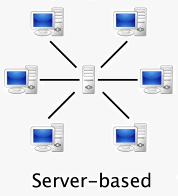
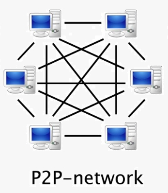
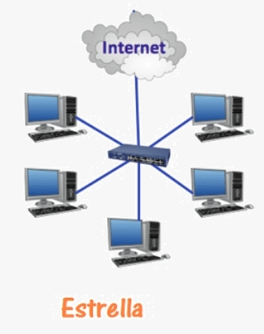
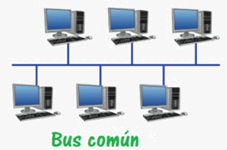
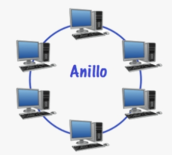
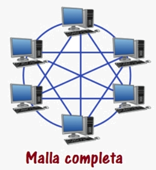
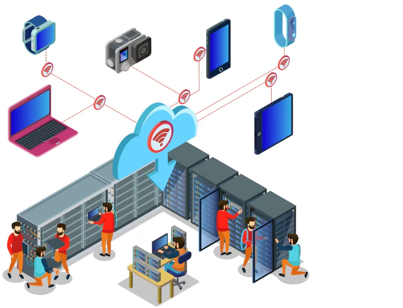

En los inicios de la informática, el objetivo primordial consistía en hacer que la máquina
En los inicios de la informática, el objetivo primordial consistía en hacer que la máquina
realizara tareas útiles. Cuando los ordenadores y la informática son ya un hecho, surge la
necesidad de conectarlos entre sí, con objetivos de:
• Distribuir tareas entre equipos.
• Compartir información.
• Compartir programas.
• Compartir todo tipo de dispositivos hardware.
Conceptos fundamentales:
- Host o nodo: equipo capaz de comunicarse en red.
- Sistema aislado: equipo sin conexión a otros (más seguro, pero limitado).
- Sistema en red: equipos conectados que comparten recursos.
- Sistema distribuido: varios equipos colaboran en una tarea sin saber quién hace qué.
Para conectarse a una red, un equipo necesita una tarjeta de red y protocolos de comunicación.
1. Redes de área local (LAN)

Una LAN conecta al menos dos equipos en un área limitada (empresa, instituto, casa).
Ventajas principales
- Ahorro económico (compartir periféricos)
- Acceso común a datos
- Evitar duplicidad de información
- Trabajo distribuido
- Copias de seguridad centralizadas
Características clave (según IEEE)
- Ámbito reducido
- Alta velocidad
- Baja tasa de error
2. Modelos y topologías de red
Modelos de red
🔹 Cliente-Servidor
🔹 Peer-to-Peer (P2P)
Topologías de red
Define cómo se conectan los equipos.
⭐ Estrella
➖ Bus (Ethernet antiguo)
🔄 Anillo (Token Ring)
🔗 Malla
Cliente-Servidor

Un servidor controla recursos, los clientes solicitan acceso y requiere autenticación.
👉 Si falla el servidor → la red se ve afectada
Peer-to-Peer (P2P)

Todos los equipos pueden actuar como cliente y servidor, no hay dependencia central y cada recurso requiere autenticación independiente.
Estrella

Todos los equipos conectados a un dispositivo central (switch)✔ Fácil gestión
❌ Si falla el centro → cae la red
Bus (Ethernet antiguo)

Un único cable compartido
❌ Si se rompe → red caída
❌ Bajo rendimiento con muchos equipos.
Anillo (Token Ring)

- Equipos en círculo
- Usa un “token” para evitar colisiones
- Variante: doble anillo (más fiable)
Malla

Todos los equipos conectados entre sí
✔ Muy fiable
❌ Muy costosa
¿Hemos comprendido los distintos modelos y topologías?
Debatimos:
- ¿ Cuál crees que sería la topología que tienes en tu casa ?.
- Y en el Instituto ¿?
- Y en una PYME o una gran empresa ¿?.
Tarea 01. Identifica mediante 2 imágenes 2 tipos de redes locales y señala su topología y todos los elementos que intervienen en las mismas

Realiza el siguiente ejercicio. Localiza en internet una imagen de una red de área local, descarga la imagen e incrústala en un documento. Localiza en la misma:
- Todos los elementos que intervienen.
- Etiquétalos.
- Identifica el tipo de topología de la red.
- Identifica las ventajas y puntos de mejora de dicha red.
Lumen dice Inspiración para tus respuestas
Recuerda que si lo necesitas puedes activar los subtítulos.
3. Historia de las redes informáticas
Las redes locales (LAN) surgieron a finales de la década de 1970 para conectar ordenadores centrales, evolucionando rápidamente gracias al desarrollo de Ethernet en Xerox PARC (1973) y ARCNET (1977). Estas tecnologías permitieron la interconexión de equipos en áreas limitadas como oficinas, consolidándose en los años 80 con el auge de las computadoras personales.
Aquí te presento un artículo detallado por la historia de las redes de área local (LAN):